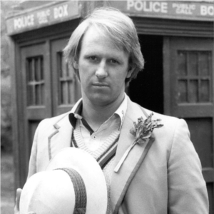

Portrayed by Peter Davison
|  | Peter Davison (born Peter M. G. Moffett on 13 April 1951) Is a British actor, best known for his roles as Tristan Farnon in the television version of James Herriot's All Creatures Great and Small, as the fifth incarnation of the Doctor in Doctor Who, which he played from 1982 to 1984, and as David Braithwaite in At Home with the Braithwaites. Since 2011 he has been playing Henry Sharpe in Law and Order: UK. |